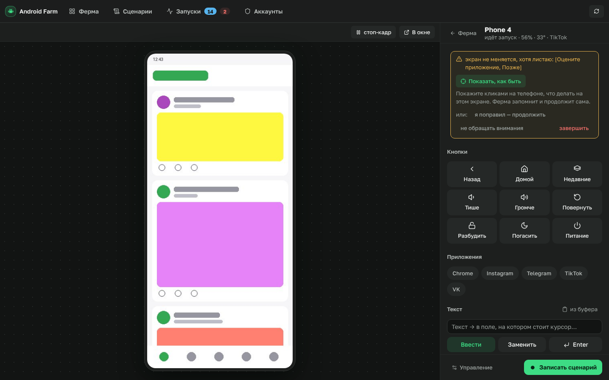
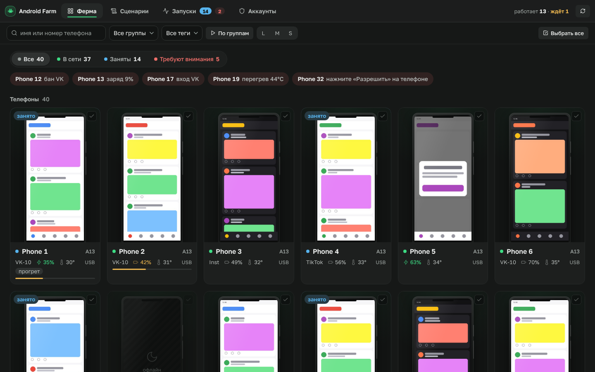
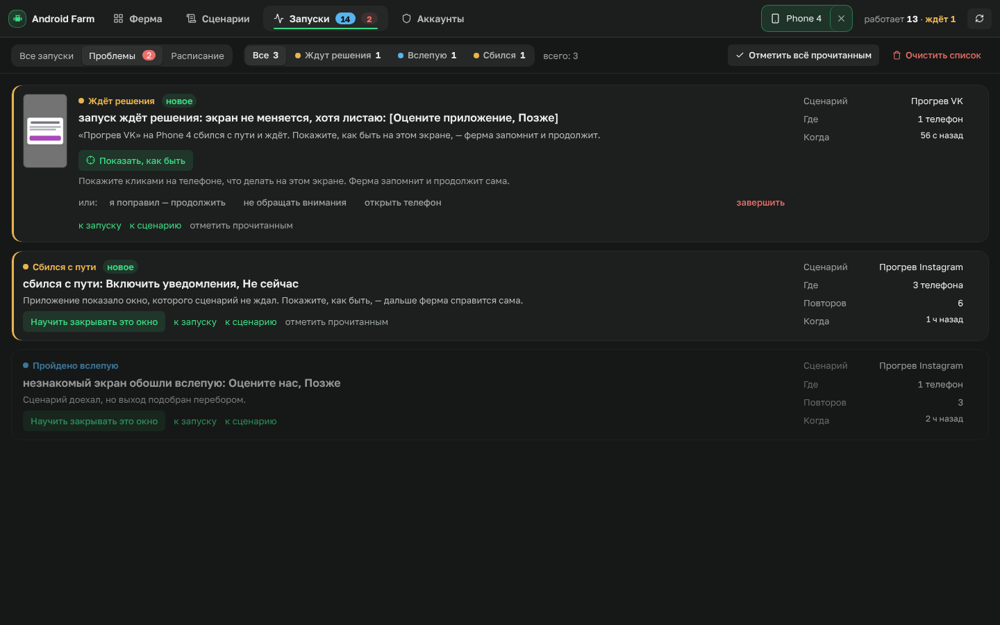
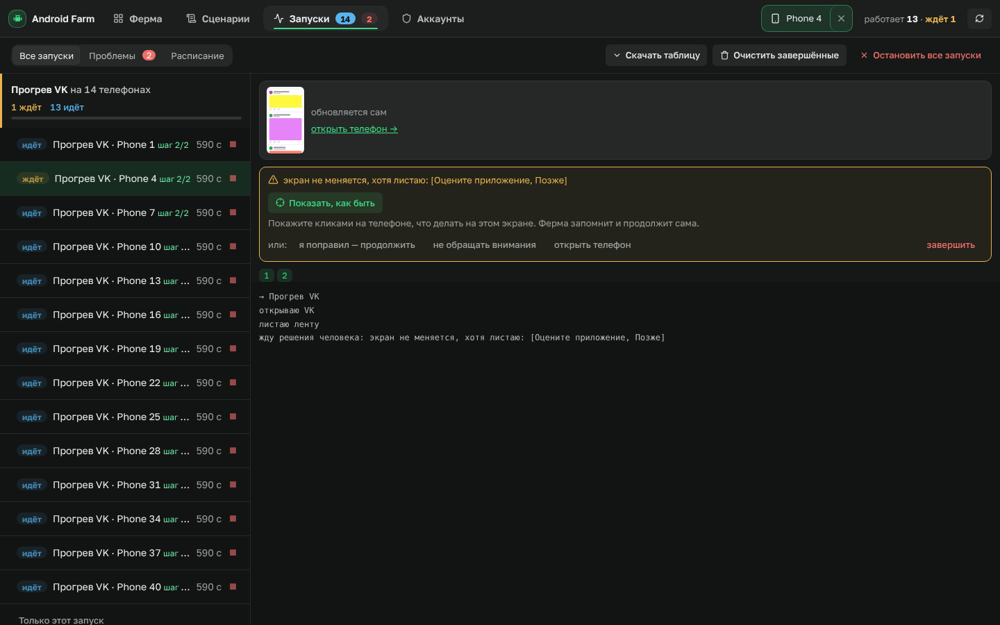
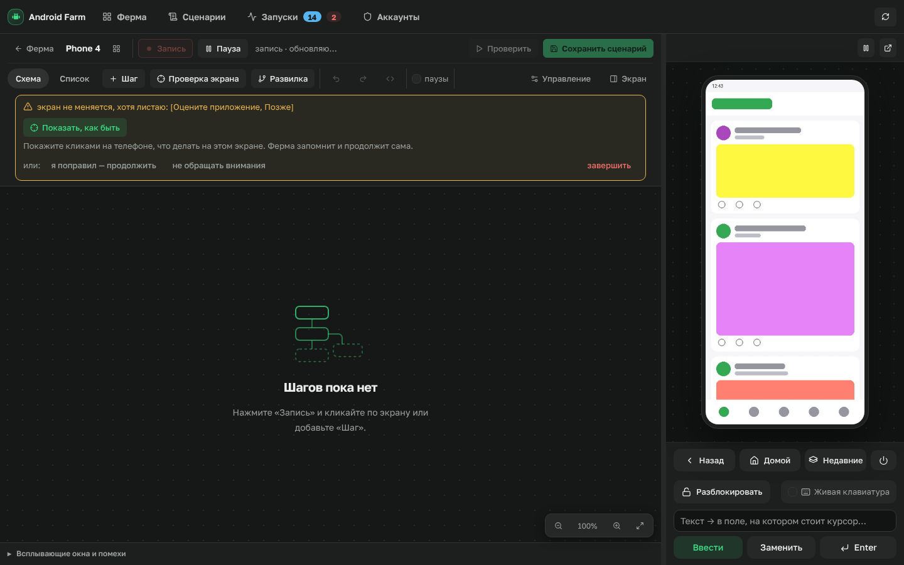
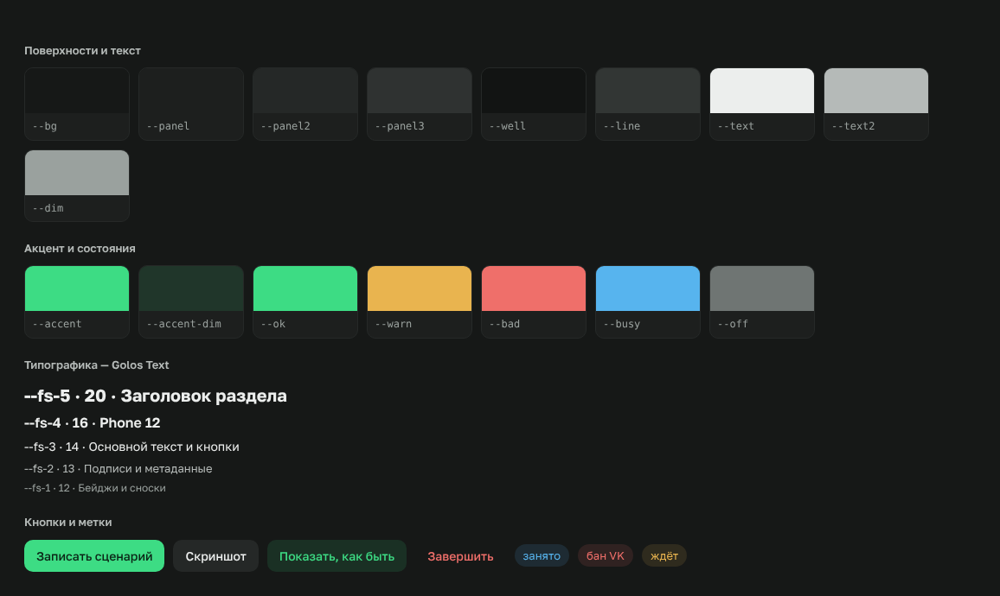

Что где лежит, как одно нажатие кнопки доходит до телефона, Python ровно в том объёме, который нужен этому проекту, и три пошаговых примера, как добавить фичу самому.

Ферма — это сервер на Python, который говорит с телефонами через adb, и сайт, который показывает всё человеку. Они общаются только через HTTP-запросы на адреса /api/….
control/ → телефон. Нижний слой никогда не знает о верхнем. Поэтому любой кусок можно понять и проверить отдельно.| Файл | Что делает | Когда открывать |
|---|---|---|
server.py | собирает приложение: подключает API, защиту, раздачу сайта | редко |
config.py | все настройки; каждую можно задать переменной FARM_… | поменять порт, папку, таймауты |
api/*.py | адреса /api/…: принять запрос, вызвать сервис, вернуть JSON | новый адрес API |
api/screen.py | экран и действия: нажатия, клавиши, поворот, скриншот, видео; словарь ACTIONS | новое действие с телефоном |
api/bulk.py | массовые действия с разбросом по времени, установка APK, файлы | действие на многих телефонах |
devices/registry.py | какие телефоны подключены, заряд, температура, имена, группы, теги | новое свойство телефона |
devices/runner.py | очередь запусков: поток на телефон, отмена, остановка «ждёт человека» | как идут запуски |
context.py | ctx: клик, ввод, ожидание, проверка экрана, развилки, сторож | новая команда для сценариев |
scenarios.py | находит и загружает сценарии из папки, проверяет готовность телефонов | редко |
resolve.py | ищет кнопку: селектор → текст → OCR → картинка → координаты | «не находит кнопку» |
guards.py · obstacle.py | стражи и слепки незнакомых экранов — как ферма учится закрывать окна | обучение, отводы |
deviations.py | раздел «Проблемы»: одинаковые случаи сливаются в одну строку | новый вид проблемы |
schedule.py | смены: запуск по дням и окнам времени | расписание |
accounts.py | аккаунты соцсетей и раздача их по телефонам | аккаунты |
recorder/ | конструктор: шаги ⇄ код сценария, сохранение | конструктор |
control/ | низкоуровневые действия: ввод, приложения, скриншоты, стабильность экрана | как именно нажимаем |
streaming/ | трансляция экрана: один захват на телефон, сколько угодно зрителей | тормозит экран |
adb.py | обёртка над программой adb | редко |
security.py | защита от чужих сайтов и вход по токену | доступ по сети |
| Файл | Что делает |
|---|---|
index.html | разметка всех разделов. Раздел — <section id="view-fleet">, view-device, view-jobs… |
design/tokens.css | дизайн-токены: --accent, --fs-3, --s4… Компоненты пишут только их |
strings/ru.json | все тексты: "pult.skrinshot": "Скриншот" |
js/i18n.js | t('ключ') и подстановка текстов в разметку |
js/core.js | общее: состояние S, api(), post(), toast(), модалки |
js/app.js | переключение разделов showView(), опросы сервера, запуск страницы |
js/fleet.js | «Ферма»: плитки, фильтры, выбор, «Требуют внимания» |
js/pult.js | пульт телефона |
js/screen.js | экран телефона: трансляция, жесты, клавиши, act() |
js/bulk.js | массовые действия, синхронное управление, загрузка файлов |
js/rundialog.js | окно «Запуск сценария» |
js/jobs.js · deviations.js | «Запуски» и «Проблемы», полоса решения «ждёт человека» |
js/schedule.js · accounts.js | «Расписание» и «Аккаунты» |
js/recorder.js и соседи | конструктор сценариев (самая большая часть) |

fleet.js — раздел «Ферма»

deviations.js — «Проблемы»
index.html, найдите текст кнопки (Ctrl+F) — рядом onclick="pultShot()". Функция с этим именем лежит в файле с тем же началом: pult… → pult.js, fleet… → fleet.js, rec… → recorder.js.index.html зовёт openRunDialog() (rundialog.js). Человек выбирает сценарий и телефоны, жмёт «Запустить» — уходит запрос:
post('/api/run', {scenario: 'warmup_vk', serials: ['R58N1001', 'R58N1002'], params: {minutes: 10}})api/scenarios.py принимает запрос и отдаёт работу очереди:
@router.post("/api/run")
def run_scenario(payload: dict = Body(...)):
key = payload.get("scenario")
serials = payload.get("serials") or []
if not key:
raise HTTPException(400, "не указан сценарий") # ошибка уйдёт на сайт тостом
jobs = runner.submit(key, serials, payload.get("params"), ...)devices/runner.py кладёт по задаче на каждый телефон. У каждого телефона свой поток: телефоны работают параллельно, но на одном телефоне задачи идут по очереди.ctx (context.py) и вызывает run(ctx) из файла сценария.ctx.click(text="Войти") → resolve.py находит кнопку → control/input.py → adb → телефон.app.js раз в 2 секунды спрашивает GET /api/jobs и перерисовывает «Запуски».
Каждый .py-файл — модуль, папка с __init__.py — пакет. farm/control/input.py импортируется как farm.control.input. Точка в начале — «из этого же пакета».
from .. import adb, config # подняться на уровень вверх (farm) и взять adb.py, config.py from ..devices import registry # farm/devices/registry.py
serials = ["R58N1001", "R58N1002"] # список payload = {"type": "tap", "x": 0.5} # словарь (как JSON) payload["x"] # 0.5 payload.get("y", 0) # 0 — если ключа нет, без ошибки online = [d for d in devices if d.online] # «списковое включение»: отфильтровать name = f"Phone {i + 1}" # f-строка: подстановка в текст
def tap(serial: str, x: float, y: float) -> None: # подсказки типов: что принимает/возвращает ax, ay = to_pixels(serial, x, y) # функция вернула два значения if via_u2(serial, lambda d: d.click(ax, ay)): # lambda — короткая безымянная функция return adb.shell(serial, ["input", "tap", str(ax), str(ay)])
@dataclass — класс-«анкета»: перечисляете поля, Python сам пишет конструктор.
@dataclass
class Device:
serial: str
state: str = "offline"
battery: int | None = None # число или «нет данных»
tags: list[str] = field(default_factory=list)
@property # вычисляемое поле: device.online без скобок
def online(self) -> bool:
return self.state == "device"
try:
png = adb.exec_out(serial, ["screencap", "-p"])
except Exception as e:
raise HTTPException(500, f"скриншот не снялся: {e}") # сайт покажет текст тостом
Строка с @ над функцией «оборачивает» её. В проекте это почти всегда регистрация адреса API:
@router.get("/{serial}/screenshot") # «вызывай эту функцию на GET /api/devices/…/screenshot»
def screenshot(serial: str): ...
PORT = int(os.getenv("FARM_PORT", "8777")) # FARM_PORT=9000 ./run.sh
DATA_DIR = PROJECT_DIR / "data" # Path: «/» склеивает пути
(DATA_DIR / "accounts.json").read_text("utf-8")
Телефоны обслуживаются параллельными потоками; чтобы два потока не испортили общий словарь, его трогают под замком:
with _records_lock: # внутри блока — только один поток
_records[serial] = {...}
| Тема | Где в проекте посмотреть |
|---|---|
| простой модуль без зависимостей | farm/deviations.py, farm/obstacle.py |
| API от начала до конца | farm/api/screen.py |
| потоки и очередь | farm/devices/runner.py |
| сценарий | scenarios/warmup_vk.py + scenarios/_human.py |
| тесты с подменами | tests/test_watch.py, tests/test_pult_api.py |
_ в начале — внутренние, их можно пропустить при первом чтении.router = APIRouter(prefix="/api/devices") # общий префикс для файла @router.post("/{serial}/action") # {serial} попадает в аргумент def action(serial: str, payload: dict = Body(...)): # тело запроса — словарь handler = ACTIONS.get(payload.get("type")) if handler is None: raise HTTPException(400, "неизвестное действие") # 400 — ошибка запроса return handler(serial, payload) or {"ok": True} # словарь → JSON
Новый файл роутера подключается одной строкой в farm/api/__init__.py: router.include_router(новый.router).
Сценарий — файл в backend/scenarios/ с функцией run(ctx). Записанные конструктором сценарии — такие же файлы, их можно читать и править.
NAME = "Прогрев VK"
PARAMS = {"minutes": {"label": "Минут на телефон", "type": "number", "default": 10}}
def run(ctx):
ctx.launch_app("com.vkontakte.android", stop_first=True)
ctx.click(text="Лента", timeout=10)
for _ in range(20):
ctx.swipe(0.5, 0.75, 0.5, 0.3)
ctx.sleep(3)
ctx.on_track("com.vkontakte.android") # сторож: своё ли приложение, листается ли
ctx.home()
| Команда | Что делает |
|---|---|
ctx.click(text=…) / ctx.click_target(sel, text, img, at) | нажать; второй ищет в несколько слоёв |
ctx.type("текст") · ctx.key("back") | ввести текст, нажать клавишу |
ctx.tap(x, y) · ctx.swipe(…) | нажатие и свайп в долях экрана (0…1) |
ctx.launch_app(pkg) · ctx.open_url(url) | открыть приложение, ссылку |
ctx.expect_screen(name, any=[…]) | «я обязан быть на этом экране» — иначе спросит человека |
ctx.which_screen({…}) | развилка: какой из экранов сейчас |
ctx.on_track(pkg) | сторож долгих циклов |
ctx.account("vk") | логин и пароль аккаунта этого телефона |
ctx.run("block") | выполнить другой сценарий как блок |
ctx.params["minutes"] | параметры из окна запуска |
ctx.log("…") · ctx.screenshot() | строка в журнал, снимок в артефакты |
ctx.account("vk")["password"] — пароль лежит в data/accounts.json, а не в коде, который видят все.S — всё состояние: S.devices, S.jobs, S.active (открытый телефон).api(path) / post(path, body) — запрос к серверу; ошибка уже по-русски.toast(t('ключ'), 'ok') — сообщение внизу экрана.onclick="функция()" в разметке — так кнопки вызывают код.app.js обновляют S и перерисовывают разделы сами — руками перерисовывать почти никогда не нужно.backend/farm/api/screen.py — функция и строка в ACTIONS:
def _mute(serial, p):
adb.shell(serial, "media volume --stream 3 --set 0", timeout=SHELL_TIMEOUT)
ACTIONS = {
...
"mute": _mute,
}frontend/strings/ru.json: "pult.bez_zvuka": "Без звука",frontend/index.html, внутри <div class="pult-keys">:
<button class="key" data-live onclick="act({type:'mute'})" data-t="pult.bez_zvuka">
<svg class="ic"><use href="#i-volume-low"/></svg>Без звука</button>bulkAction({type: 'mute'}, 'Без звука').# backend/farm/api/devices.py @router.get("/groups/count") def groups_count(): counts = {} for d in registry.all(): name = d.group or "без группы" counts[name] = counts.get(name, 0) + 1 return counts # GET /api/devices/groups/count → {"VK-10": 12, ...}
# backend/scenarios/open_settings.py — появится в «Сценариях» сам
NAME = "Открыть настройки"
DESCRIPTION = "Открывает настройки и возвращается домой"
PARAMS = {"pause": {"label": "Пауза, с", "type": "number", "default": 2}}
def run(ctx):
ctx.launch_app("com.android.settings")
ctx.sleep(ctx.params["pause"])
ctx.home()
Тесты лежат в backend/tests/, телефон им не нужен: всё, что ходит в adb, подменяется через monkeypatch.
def test_поворот(phone): # phone — подготовка из фикстуры res = api_screen.action("A", {"type": "rotate"}) assert res["landscape"] is True # assert: «должно быть так», иначе тест красный assert "settings put system user_rotation 1" in phone
cd backend ../.venv/bin/python -m pytest -q # все тесты (~30 секунд) ../.venv/bin/python -m pytest -q tests/test_watch.py # один файл ../.venv/bin/python -m pytest -q -k поворот # по части имени
| Задача | Команда / место |
|---|---|
| запустить ферму | ./run.sh → http://127.0.0.1:8777 |
| только API / только сайт | FARM_SERVE_FRONTEND=0 ./run.sh · python3 frontend/dev_server.py |
| поменять текст | frontend/strings/ru.json |
| поменять цвет / размер | frontend/design/tokens.css |
| новое действие с телефоном | ACTIONS в backend/farm/api/screen.py |
| новый сценарий | backend/scenarios/имя.py с run(ctx) |
| настройки | backend/farm/config.py, переменные FARM_* |
| где мои данные | data/ — аккаунты, имена, расписание, артефакты запусков |
| посмотреть ответ API | curl 127.0.0.1:8777/api/devices |
| тесты | cd backend && ../.venv/bin/python -m pytest -q |
| переснять скриншоты доков | node docs/tools/screenshots.js |
| подробнее про механизмы | docs/guide.md · docs/architecture.md |

Конструктор (recorder.js)

Дизайн-токены (design/tokens.css)